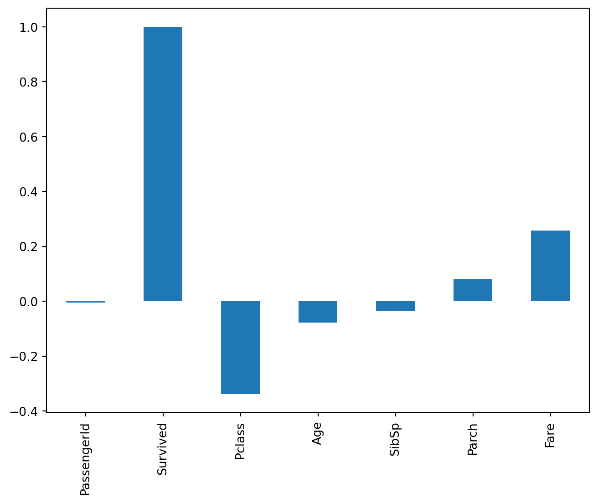

A legutolsó link elég jól szemlélteti, hogy miért érdemes ezek beállításába egy kevés energiát fektetni.
További EDA módszerek
Előzmény: előző óra (pandas gyakorlás és megoldások).
Néhány további EDA, azaz Exploratory Data Analysis (“feltáró adatelemzés” (?)) módszert fogunk alkalmazni a Titanic adathalmazon.
Code
import numpy as npimport pandas as pdimport matplotlib.pyplot as pltdf = pd.read_csv("https://apagyidavid.web.elte.hu/2025-2026-1/dmml/data/titanic.csv")df = df.rename({"Parch": "ParCh"})df.head()
PassengerId
Survived
Pclass
Name
Sex
Age
SibSp
Parch
Ticket
Fare
Cabin
Embarked
0
1
0
3
Braund, Mr. Owen Harris
male
22.0
1
0
A/5 21171
7.2500
NaN
S
1
2
1
1
Cumings, Mrs. John Bradley (Florence Briggs Th...
female
38.0
1
0
PC 17599
71.2833
C85
C
2
3
1
3
Heikkinen, Miss. Laina
female
26.0
0
0
STON/O2. 3101282
7.9250
NaN
S
3
4
1
1
Futrelle, Mrs. Jacques Heath (Lily May Peel)
female
35.0
1
0
113803
53.1000
C123
S
4
5
0
3
Allen, Mr. William Henry
male
35.0
0
0
373450
8.0500
NaN
S
Kategorikus változók, további hasznos pandas funkciók
A Cabin oszlopról hasznos információk érhetők el ebben az elemzésben (1.2.4 szakasz):
Contingency table (cross tabulation, crosstab; magyarul leginkább kontingenciatáblázat/-tábla):
Ha szükségünk van egy egyszerű – de nem túl szép – vizualizációra, akkor közvetlenül pandas-szal gyorsan készíthetünk egy ábrát (valójában a matplotlib-et használja a háttérben):
Gyakran hangoztatott nézet, hogy először a nőket és a gyerekeket mentették ki a katasztrófa során. Egy másik gyakori megállapítás szokott lenni az, hogy az első osztályon utazó vendégek előnyt élveztek a mentés során.
Hipotézisvizsgálat formálisan a matematikai statisztika tárgyon lesz, mi most csak naivan próbálunk meg feltárni hasonló összefüggéseket.
Fogalmazzunk meg és teszteljünk néhány hipotézist a túlélésre vonatkozóan!
1. hipotézis: A nők előnyt élveztek a kimentés során, de azon belül is az első osztályon utazó hölgyek.
2. hipotézis: A túléléssel leginkább korreláló numerikus változó a kor.
Próbáljuk meg megválaszolni a kérdéseket!
1. hipotézis: első osztályon utazó hölgyek
Érdemes ellenőrizni, hogy mekkora létszámokról van szó, ugyanis ha például nagyon kis elemszámú valamelyik vizsgált kategória, akkor nem biztos, hogy van értelme egyáltalán a kérdésfelvetésnek.
A fenti táblázatból több kézenfekvő megállapítás adódik:
A nők túlélési aránya 74.2%, a férfiaké 18.9%. (Az összes utasra vonatkoztatva 38.4% ez az érték).
Az első és második osztályon utazó nők túlélési aránya 96.8% és 92.1%, a harmadik osztályon utazóké 50%.
A férfiak esetében is igaz az, hogy a magasabb osztályon utazók túlélési aránya nagyobb.
Ezek a megállapítások alátámasztják az 1. hipotézist.
TipPrecízebb vizsgálat
Ha matematikailag korrektebb megállapításokat szeretnénk tenni, akkor statisztikai teszteket kell végeznünk. Néhány Wikipedia szócikk iránymutatásképpen:
PassengerId -0.005007
Survived 1.000000
Pclass -0.338481
Age -0.077221
SibSp -0.035322
Parch 0.081629
Fare 0.257307
Name: Survived, dtype: float64

A Survived oszloppal leginkább korreláló numerikus feature-ök a Pclass (-0.34) és a Fare (0.26). Tehát minél magasabb osztályon utazott valaki, annál nagyobb a megmenekülésének valószínűsége (a nemtől függetlenül, lásd 1. hipotézis).
Nem várható, hogy mentéskor a jegy árát kérdezgették az emberektől. Ez a klasszikus rejtett vagy harmadik változó esete: a vizsgált (független) változó és a célváltozó (függő változó) között van egy harmadik (rejtett) változó, amely a korrelációt okozza. Jelen esetben ezt tudhatjuk is, a jegyár nyilvánvalóan az utas osztály függvénye:
df["Fare"].corr(df["Pclass"])
np.float64(-0.5494996199439074)
Gyakorlás
Az elemzés során használj minél többféle órán látott módszert. Nézz utána, milyen beállításokkal tudod még jobban kihasználni a pandas (vagy polars) adta lehetőségeket.
Vizsgáld meg egy (órán eddig nem vizsgált) kategorikus és egy folytonos, numerikus változó eloszlását, és ábrázold is egy megfelelő diagramon.
# TODO
Hogyan hat a túlélés valószínűségére, ha egy családtagod utazott veled együtt (SibSp és ParCh oszlopok)? Fogalmazz meg előre egy hipotézist, és próbáld meg ellenőrizni. A kapott eredményhez készíts megfelelő vizualizációt és számolj statisztikákat. Mennyire tartod meglepőnek az eredményt? Mit gondolsz, ha kettő helyett négy oszlopunk lenne, külön a testvéreknek, házastársnak, szülőnek és gyereknek, hasonló eredményre jutnánk?
# TODO
A .query() metódussal a sorokra lehet szűrni. Próbáld meg megérteni, jellemezni néhány grafikon segítségével a harmadosztályú utasokat.
# TODO
Válassz egy oszlopot, pl. Age és vedd a df["Age"]pd.Series-t. Milyen műveleteket tudsz rajta elvégezni, amiket már egy np.array-en megszoktál? Meg tudod szorozni, tudod venni az átlagát, stb.? Találsz olyan műveletet, amit csak ezen lehet? És olyat, amit csak egy np.array-jel tudtál megcsinálni? Mi van, ha két oszlopot veszel, pl. df[["Age", "Pclass"]]? Mennyire viselkedik ez a típusú objektum egy többdimenziós np.array-hez hasonlóan?
# TODO
Az alábbi művelet kilistázza azon utasokat, akiknek nem került semmibe a jegye:
df.query("Fare == 0")
Vizsgáld meg, hogy lehet-e ennek valami értelmes magyarázata, vagy ezeket hibás (kiugró) értékekként kell kezelnünk. Pl. gyerek, és ezért utazik ingyen, vagy valami családtaggal stb.
A modelleink többsége, amiket tanulni fogunk, numerikus adatokkal tud csak dolgozni. A nem numerikus változók elkódolása (numerikus értékké alakítása, encoding) ezért általában szükséges, mielőtt a modellezéssel foglalkoznánk. Modellezzéssel csak a következő órán fogunk foglalkozni, előtte most néhány egyszerűbb technikát tekintünk át.
Numerikus változók
Binning: folytonos eloszlás diszkrétté tétele
Binary: egy küszöbértékhez viszonyított érték alapján
Binning
Folytonos változót vödrökbe rakjuk. Hívják ezért groupingnek és bucketingnek is. Pl.
def age_group_mapping(age: int) ->str|None:if age <2:return"baby"if2<= age <18:return"children"if18<= age <30:return"youth"if30<= age <50:return"adult"if50<= age:return"old"returnNonedisplay(df["Age"].apply(age_group_mapping).head())df["AgeGroup"] = df["Age"].apply(age_group_mapping)df["AgeGroup"].value_counts()
One-hot encoding: minden egyes egyedi értékhez egy indikátor változót rendel
Label encoding: egyedi értékekhez rendelünk egyedi számot
Ordinal: van értelme a sorrendnek
Nominal: nincs értelme a sorrendnek
One-hot encoding
Dummy kódolásnak is nevezik. Nézzük az Embarked oszlopot! Három lehetséges értéke az S,C,Q. Vegyünk 3 indikátor változót, nevezzük őket Embarked_S, Embarked_C, Embarked_Q-nak. A szabály a következő: ha X városban szállt be valaki, akkor Embarked_X értéke legyen 1, a többié 0. Tehát például, ha valaki Southamptonban szállt fel, akkor Embarked_S=1, Embarked_C=0, Embarked_Q=0. Ezen indikátor változókat nevezzük dummy változóknak, a belőlük képzett vektort pedig dummy vektornak. Ez előző esetben például a dummy vektor a következő lenne: \([1,0,0]\). Az egyes oszlopok ekkor arra a kérdésre válaszolnak valójában, hogy az illető X városban szállt-e fel.
Embarked
S 644
C 168
Q 77
Name: count, dtype: int64
Vegyük észre, hogy az utolsó oszlopot akár el is lehet hagyni: Embarked_Q pontosan akkor 1, ha a többi 0. (Hiszen az első \(n-1\) indikátor változó meghatározza az \(n\)-diket, ha a rendszer teljes.)
Label encoding
Egy \(n\) különböző értéket felvevő kategorikus változó értékeit 0-tól \(n-1\)-ig terjedő skálán reprezentáljuk.
Ha a kategóriáknak van természetes sorrendjük – például az AgeGroup változó esetén –, akkor érdemes ezt figyelembe venni: ekkor ordinal encodingról beszélünk.
WarningKorreláció és kategorikus változók
Egy kategorikus változó numerikussá tétele után a df.corr() hívásban már ez a változó is szerepelni. Ez attól még nem jelenti azt, hogy az eredmény értelmes. Ha egy kategorikus változó (a szó köznapi értelmében) erősen korrelál egy másikkal, akkor különböző leképezések során különböző értéket fogsz kapni.
Skálázás (Scaling)
Néha a numerikus értékeket szeretnénk átskálázni is (ha pl. a konkrét érték helyett az egymáshoz viszonyított érték számít).
Standarizálás
Ha adott egy \(N(m,\sigma)\) normális eloszlású változó, érdemes lehet standard normálissá transzformálni.
A változó értékeit egy lineáris leképezéssel a \([0,1]\) vagy esetleg a \([-1,1]\) intervallumba képezzük.
Gyakorlás
Encoding
A Sex kategorikus változót kódold el numerikus értékké! Milyen kódolást használtál? Lehet-e mást?
# TODO
Az Age oszlopot az átlag helyett kódold el a medián szerint binárisan! Nézd meg, hogy az utasosztályok szerint milyen eloszlást kapsz!
# TODO
Az ordinal encoding során a transzformálni kívánt változónak van egy természetes sorrendje (pl. napok, hónapok). Ekkor a kódolás során ezt szeretnénk megtartani. Jelen esetben ilyen például az AgeGroup változó. Alakítsd át numerikus értékké a sorrend tiszteletben tartásával!
# TODO
A scikit-learn.preprocessing modul nem csak a skálázásra, de az elkódolásra is tartalmaz beépített függvényt. A LabelEncoder segítségével ismételd meg az Embarked oszlop órán látott Label encoding változatát!
# TODO
Készíts egy vezetéknév oszlopot és nézd nézd meg a leggyakoribb neveket. A vezetéknév kinyeréséhez figyeld meg, hogy mindenki vezetékneve vesszővel elválasztva szerepel a string elején. Ismered a megfelelő python parancsot erre? Ha nem, nézd meg, hogy mit csinál .split(",") parancs az oszlop egy tetszőleges elemén.
# TODO
Kódold el az Age oszlopot a kvartilisek alapján! Használd a quantile vagy percentile függvényeket. Milyen típusú kódolás ez? Mit gondolsz, milyen modellek esetén érdemes így elkódolni egy adatot, és mikor felesleges, sőt hátrányos?
# TODO
A target encoding során egy kategorikus változót aszerint kódolunk el, hogy a célváltozónak mennyi az átlaga a változó adott szintjén. Készítsd el az Embarked oszlop target encode-olt változatát. Mi ennek a kódolásnak a hátránya? Érdemes szerinted használni?